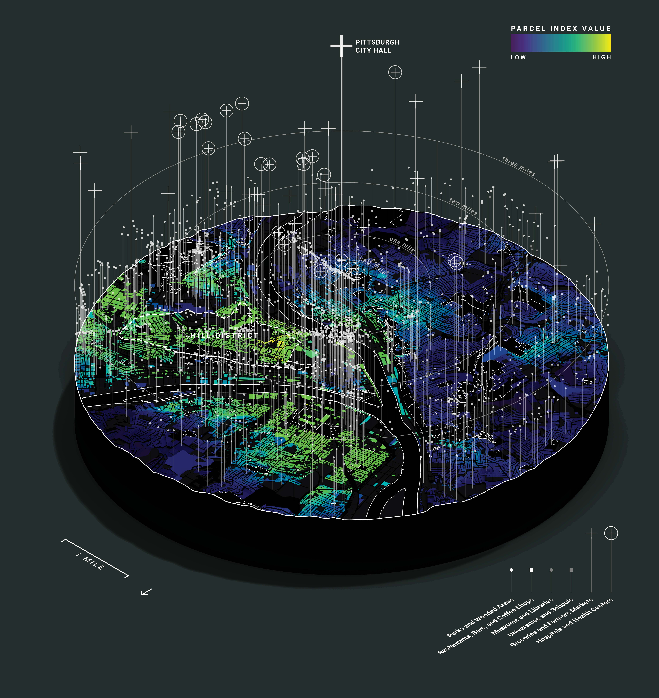
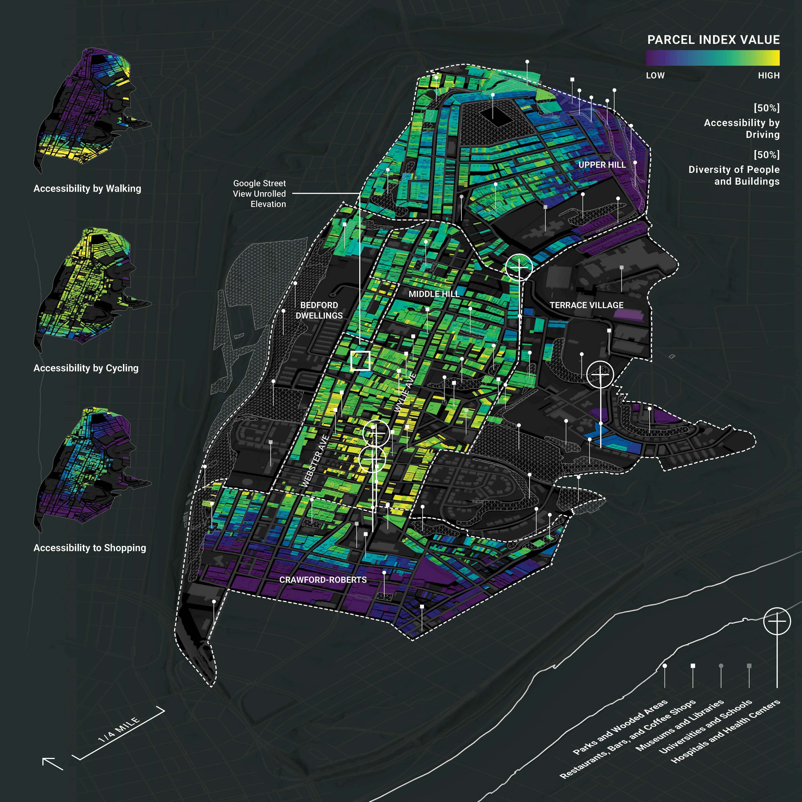
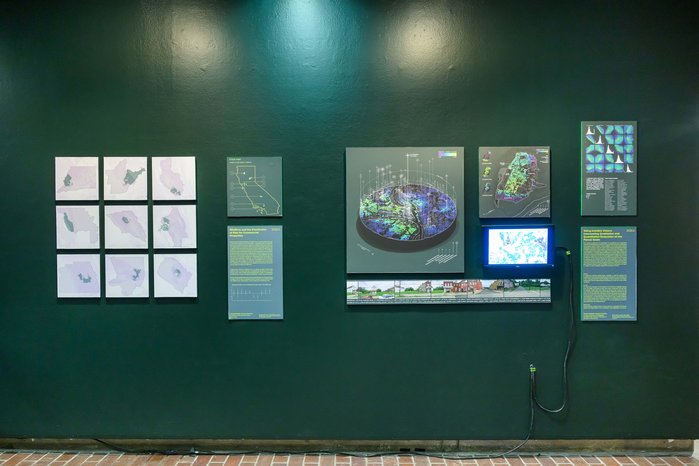
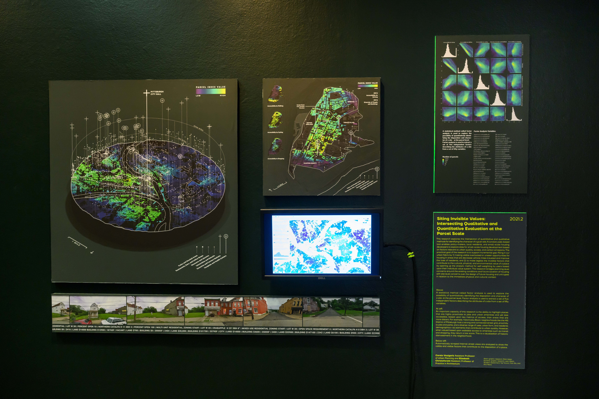
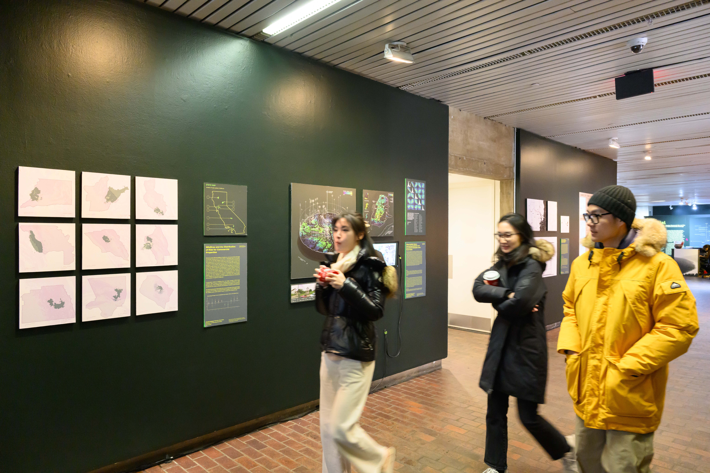
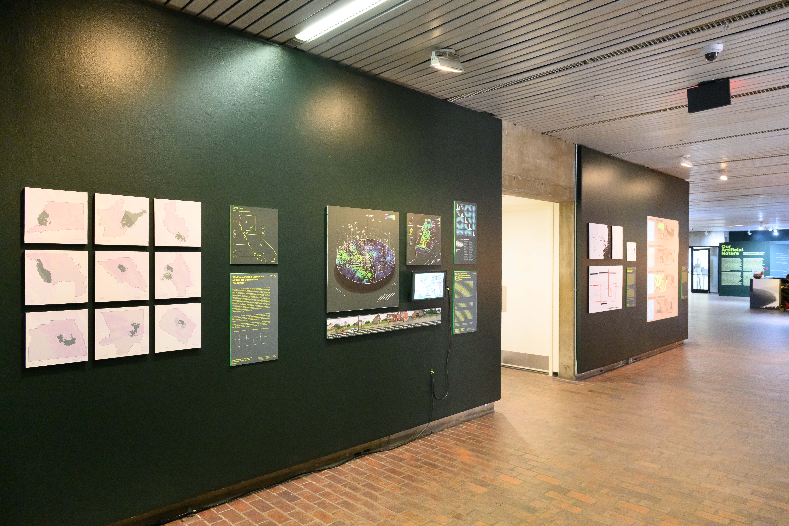

Siting Invisible Values
[2023]
This visualization illuminates how value systems affect development in Pittsburgh, PA. The
research team developed a parcel-level index for development potential, based on indices like
accessibility by walking, proximity to retail, and diverse building uses and demographics. I
developed a computational workflow to visualize opportunity for development based on the matrix
of preferences.
An important capacity of this research is the ability to highlight places that are highly
proximate to jobs and urban amenities and yet less accessible, based upon key metrics of access,
than areas that are more distant. For example, historically Black neighborhoods like the Hill
District of Pittsburgh host a strong and connected street grid, proximity to jobs and parks, and
a diverse range of uses, urban form, and resident demographics — all elements that contribute to
urban quality. However, when valued based upon walkable access to amenities such as transit and
shopping, they return a low score. This is a visualization of historic disinvestment in the
neighborhood.
-----
Siting Invisible Values: Intersecting Qualitative and Quantitative Evaluation at the Parcel
Scale
Our Artificial Nature: Design Research for an Era of Environmental Change
Coordinator: Elizabeth Christoforetti
Druker Design Gallery, Harvard University Graduate School of Design
Cambridge, MA
On Display Nov 13 - Dec 21, 2023

Development index by parcel for Pittsburgh

Development index by parcel for Pittsburgh's Hill District

Exhibition photograph

Exhibition photograph

Exhibition photograph

Exhibition photograph